|
Download 109
Studios Explorer
Tour 109 Studios Explorer
Privacy Policy |
|
Tour the features
below:
|
109 Studios
The 109 Studios page is the home page of the 109 Studios Explorer.
Here, you can browse and search through the catalog of music hosted
at 109 Studios. Not sure what to search for? Check out
the Top Downloaded Tracks, and filter by genre to find new music at
109 Studios. Interact with other members by viewing What
People Are Playing. Preview or download tracks hosted at 109
for free. View the last 10 posts made for each track, and find
members who's taste in music you like. Find new music and make
friends.
|
- Browse 109 Music
Browse and search on music hosted at 109 Studios. Filter by Genre
and Artist Info to find the tracks that fit the kind of music
you're looking for. View Artist and Album Info about the track.
Use the links to jump to other information or more tracks by the
Artist. Preview or Download the track on the spot.
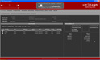
- What People Are
Downloading
View the top 40 posts of tracks other members are downloading from
109 Studios. Filter by Genre and Demographics to find the Top 40
tracks that fit the kind of music you're looking for. View Artist
and Album Info about the track. Use the links to jump to other
information or more tracks by the Artist. Preview or Download the
track on the spot. Search for the artist or album on 109 to find
any related tracks.
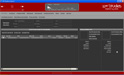
- What People Are Playing
View the top 40 posts of tracks other members are playing on their
computer. Filter by Genre and Demographics to find the Top 40
posts that fit the kind of music or people you're looking for.
View the last 10 Messages associated with the track, and Member
Info about the members of the community who posted that track.
Use the links to jump to other sections in the Member Profile
section. If the track is hosted at 109, Preview or Download the
track on the spot. If it's not hosted, search for the artist or
album on 109 to find any related tracks.
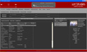
- My Favorites
Store links to your favorite artists here. Search on Artist Info
as well as a Memo that you saved with the Favorite Link. Jump
directly to other information about the Artist and their tracks.
|
My Library
|
-
My Library is your own personal digital music catalog. You
can store information about MP3, WMA, and WAV files located on
your computer.
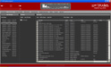
-
Play your music using the Media Player.
-
Manage and organize your music by creating Playlists.
-
You can search on track title, artist, album, and playlist of a
music file, allowing you to search on Mix Sets when the playlist
is known.
- Filter
columns in addition to searching.
- Post what you're playing to the
WIP Boards.
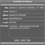
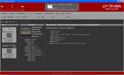
|
Member Profile
|
- My Profile
View your member profile. Using the Connection Tree, explore your
connections to other members of the community to an infinite
degree. View each members profile that you select and what music
that member has posted to their "What I'm Playing" section.
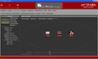
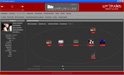
- View a User Profile
Using "Goto Username" or by way of other links, view a members'
profile and their connection tree.
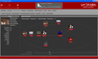
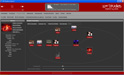
- Get to know the Members
Using "Open Link To", jump to a members website, Blog (Web Diary),
Photo Album, and Posts on the 109 Studios Message Board.
- View what their playing
View posts that a member has made about the music they're
listening to. If the track is hosted at 109, Preview or Download
the track on the spot. If it's not hosted, search for the artist
or album on 109 to find any related tracks.
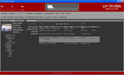
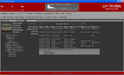
- Edit My Connections
Edit the connections you've made or other's have made to you.
- Invite Your Friends
Invite your friends to join your connection list and become a part
of your social network.
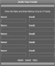
|
What I'm Playing (WIP) Boards
|
- View posts that members have
made about the music they're listening to. Filter so that you
only see posts by your Friends, Friends of Friends, or the entire
109 Studios Community. Also filter by Genre to find music that
matches the style of music you're looking for. If the track is
hosted at 109, Preview or Download the track on the spot. If it's
not hosted, search for the artist or album on 109 to find any
related tracks.
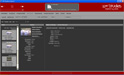
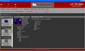
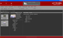
- Post the current track playing
in the 109 Media Player. Use the link provided here, in the Media
Display Panel, and in My Library. Add an optional message to the
post.
- View what you've just posted.
|
Shout Boards
|
- Similar to the WIP Boards, but
for general purpose messages and shout outs for your Friends and
Friend of Friends. Add a Web Link to the message if more
information is available (such as a party or event).
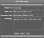
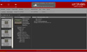
|
Member Directory
|
- Search for members of the 109
Studios Community by Demographics and Favorite Artists. Use the
links to jump to each member's profile.
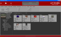
|
Forums
|
- Interact with members of the 109
Studios community in the Forums. Create Topics and
Discussions that everyone can participate in. Find out
what's going on in the music community in and around your
neighborhood. Make connections and contacts that you can add
to your connection list. This is where the people of 109
speak and get heard.
|
|
|
{kind=link}
{kind=link}
{kind=link}
{kind=link}
{kind=link}
{kind=link}
{kind=link}
{kind=link}
{kind=link}
{kind=link}
{kind=link}
{kind=link}
{kind=link}
{kind=link}
{kind=link}
{kind=link}
{kind=link}
{kind=link}
{kind=link}